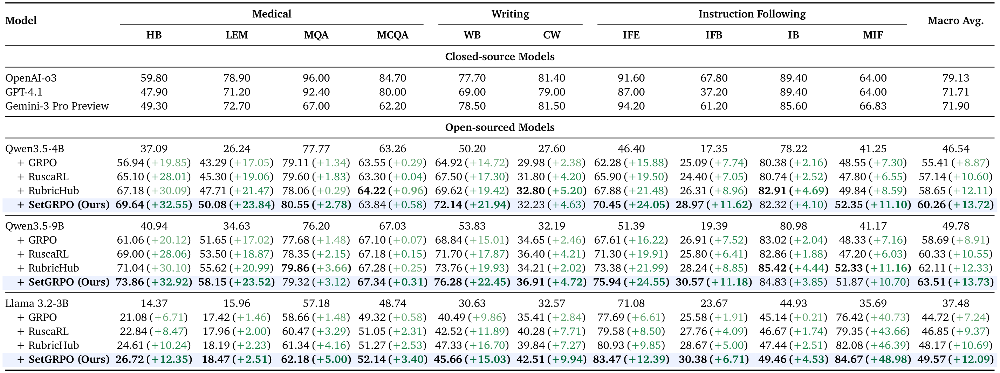
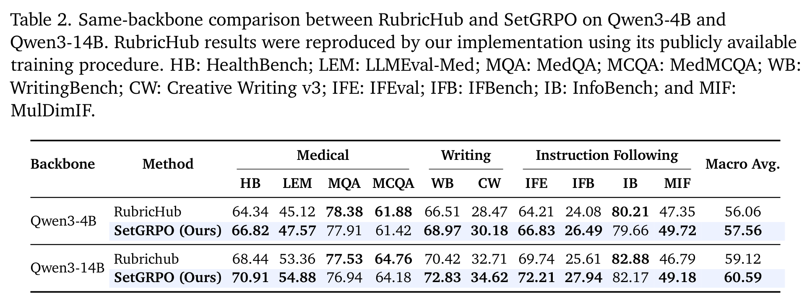

Rubric-based reinforcement learning uses fine-grained grader feedback to train large language models on open-ended tasks, but grader randomness can alter GRPO updates in ways that score discrepancies alone cannot characterize. Because GRPO jointly normalizes rewards within each response group and combines the resulting training coefficients with response-level gradients, a scoring discrepancy can shift the coefficients of the entire group and induce policy-dependent update changes. Selective execution further affects the direction-reversal risk of retained updates.
To address this, we propose Set-Valued Group Relative Policy Optimization (SetGRPO). It comprises three modules: (a) Joint Reward Set Calibration constructs a joint uncertainty set for the training coefficients; (b) Geometry-Guided Safe Recovery maps candidate coefficients into the current policy's local update geometry and determines the largest safe recovery ratio for each response group; and (c) Selective Risk-Gated Optimization selects a global threshold through independent risk calibration to control the conditional direction-reversal risk of accepted updates while preserving the original GRPO objective.
Under exchangeability, SetGRPO provides finite-sample marginal coverage for the joint coefficient set and simultaneous risk control across candidate thresholds. On ten open-ended benchmarks spanning three domains, SetGRPO achieves the highest macro average among all compared training methods on both Qwen3.5 and Llama3.2 model families.
GRPO derives each training coefficient from the shared mean and scale of its response group. A single scoring discrepancy therefore shifts the coefficients of the whole group, and the resulting update depends on the response-level gradients of the policy snapshot that happens to be in use. Scoring fixed response groups twice with the same grader shows both effects: score disagreement spreads to multiple coefficients through within-group normalization, and similar coefficient shifts can produce different update directions under different policy geometries — which in turn changes which groups selective execution keeps.
Figure placeholder — static/images/preliminary.png
(a) Score disagreement propagates jointly through within-group normalization. (b) Policy geometry changes local update alignment.
Figure 1. Illustration of score disagreement and its effect on local policy-update geometry.
SetGRPO keeps the original GRPO objective and adds three certified components.
Turns paired reward observations into a joint uncertainty set over the within-group training coefficients, with a split-conformal radius that carries finite-sample marginal coverage.
Maps candidate coefficients through the current policy's response-level gradients and returns the largest recovery ratio that keeps the update aligned with the reference direction.
Picks one global threshold on an independent risk-calibration set, bounding the conditional direction-reversal risk of the updates that survive the gate.
Figure placeholder — static/images/framework.png
(a) Joint Reward Set Calibration, (b) Geometry-Guided Safe Recovery, (c) Selective Risk-Gated Optimization.
Figure 2. Overview of SetGRPO. (caption to be refined against the paper)
Evaluation covers ten open-ended benchmarks in three domains — Medical (HealthBench, LLMEval-Med, MedQA, MedMCQA), Writing (WritingBench, Creative Writing v3), and Instruction Following (IFEval, IFBench, InfoBench, MulDimIF) — on three backbones: Qwen3.5-4B, Qwen3.5-9B, and Llama 3.2-3B. The untrained Base model is compared against three training baselines, Rubric-based GRPO, RubricHub, and RuscaRL. Every method shares the same training data, 500 optimization steps, K = 8 rollouts of at most 4096 tokens per prompt, and the same Qwen3-32B rubric grader, so the comparison isolates the training objective rather than the budget. SetGRPO attains the highest macro average on both Qwen families.
A same-backbone comparison against RubricHub isolates the effect of the method: on Qwen3-4B SetGRPO reaches a macro average of 57.56 (+1.50), and on Qwen3-14B it improves by 1.47. After calibrating the joint coefficient set and the execution threshold separately for each backbone, the gain persists, which points at the treatment of score discrepancies rather than backbone-specific tuning.


Figure placeholder — risk calibration
static/images/risk-calibration.png
Direction-reversal risk across candidate thresholds with the selected τsel.
Figure placeholder — ablation
static/images/ablation.png
Ablation over the projection conditions and the recovery anchor.
@misc{huang2026setgrpo,
title = {SetGRPO: Calibrating Grader-Induced Policy Optimization},
author = {Huang, Jiale and Li, Zixu and Chen, Zhiwei and Fu, Zhiheng
and Bi, Jinhe and Hu, Yupeng},
year = {2026},
eprint = {2610.36807},
archivePrefix = {arXiv},
primaryClass = {cs.LG},
url = {https://arxiv.org/abs/2610.36807}
}